Bier transporterer pollen fra blomst til blomst og sikrer, at planter kan lave frø og frugter. Uden bier ville biodiversiteten falde drastisk, og mange planter ville forsvinde.
Biodiversitet og sammenhæng ▶
Biodiversitet betyder variationen af planter og dyr. Bier forbinder planter og dyr i fødekæder, og deres forsvinden kan skabe ubalance i hele naturen.
Planter afhængige af bier ▶
Mange blomster, buske og frugttræer såsom æbler og kirsebær er afhængige af bier for bestøvning. Uden dem ville disse planter blive færre, hvilket også påvirker dyr, der spiser dem.
Bier og fødekæder ▶
Fødegrundlaget i naturen starter ofte med planter. Hvis bierne ikke bestøver dem, rammes hele kæden: smådyr, større dyr og til sidst mennesker. Bier har derfor enorm betydning.
Hvordan er en bistok opbygget? ▶
En bistok består af tusindvis af bier organiseret i et velfungerende samfund. I centrum finder man dronningen, som lægger æg og sikrer koloniens overlevelse. Arbejderbier (hunner) udgør størstedelen af stokken og udfører alle opgaver: indsamling af nektar og pollen, pasning af larver, rengøring, byggeri af vokstavler og forsvar af reden. Droner (hanner) har kun én opgave: at parre sig med en dronning. Bistokken bygges op af sekskantede voksceller, hvor bierne opbevarer honning, pollen og larver. Dette hierarki og samarbejde sikrer, at hele kolonien kan overleve og trives.
Bier – billeder og fakta ▶
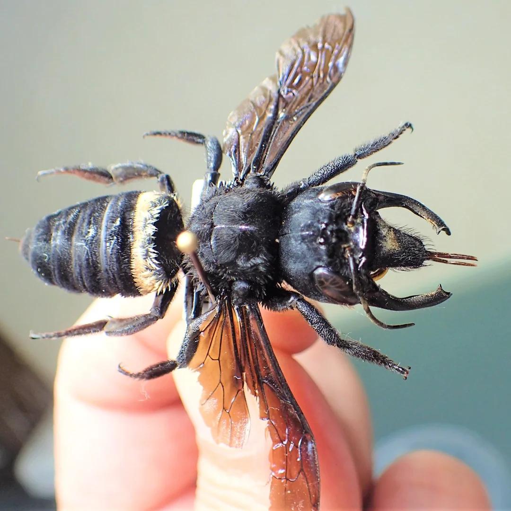
Megachile pluto
Megachile pluto – Verdens største bi
Hun > 23 mm; han 18–23 mm; største fund ca. 39 mm.
Først fundet i 1859 af Alfred R. Wallace på Bacan (Nord-Molukkerne).
Genfundet i 2019 efter årtier uden sikre observationer.
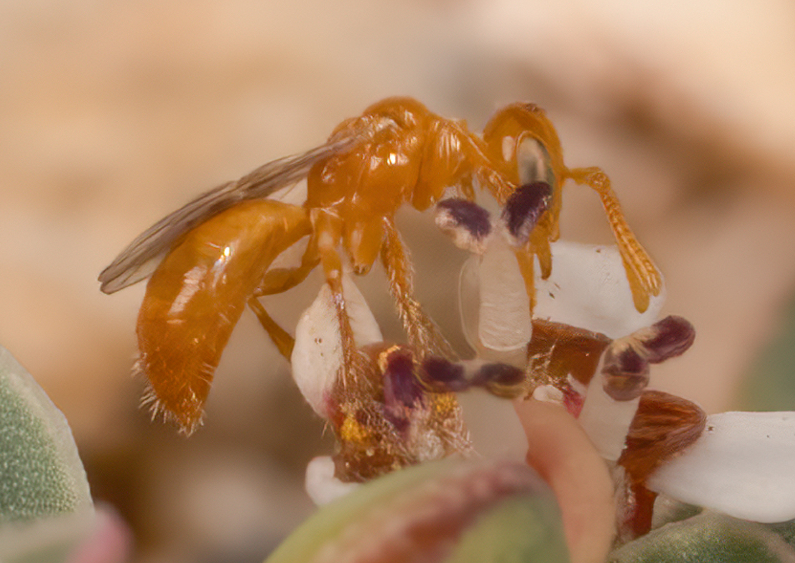
Perdita minima
Perdita minima – Verdens mindste bi
Lige under 2 mm og ca. 0,33 mg.
Solitær art.
Nordamerika – især det sydvestlige USA.
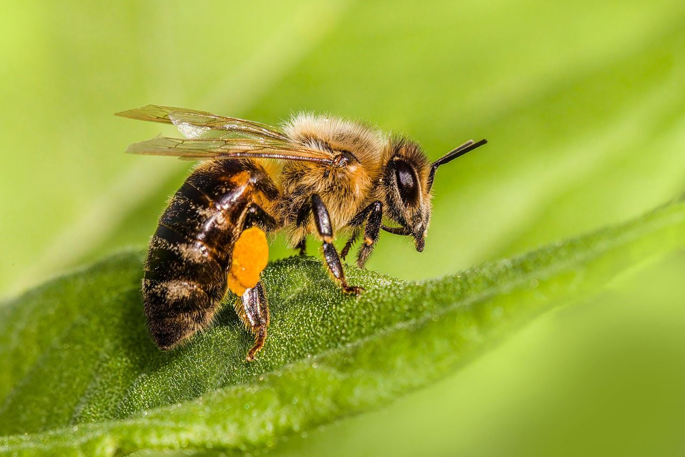
Vestlig honningbi
Vestlig honningbi (Apis mellifera)
Dronning 15–18 mm; droner 13–16 mm; arbejdere 11–13 mm.
Udbredt i Europa og Mellemøsten.
Udnyttet af mennesker siden 10.000–6.000 f.Kr.
Østlig honningbi
Østlig honningbi (Apis cerana)
Udbredelse: Syd- og Sydøstasien.
Danner mindre kolonier og bygger typisk i hulrum.
Vigtig lokal bestøver i regionen.
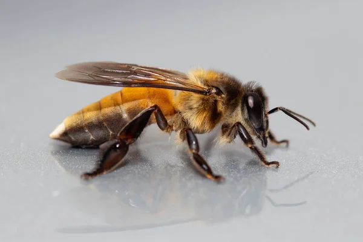
Kæmpehonningbi
Kæmpehonningbi (Apis dorsata)
Op til ca. 3 cm – blandt verdens største bier.
Udbredelse: Sydøstasien.
Bygger enorme, frit hængende tavler på åbne steder.
Sort tømrerbi
Sort tømrerbi (Xylocopa violacea)
Op til ca. 3 cm; skinnende sort med violet skær.
Udbredelse: Syd- og Centraleuropa.
Vigtig bestøver af især ærter og bønner.
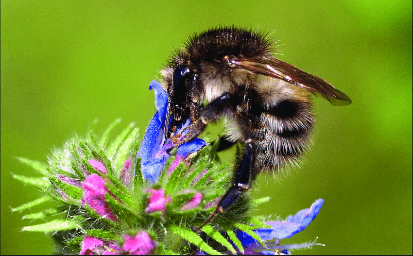
Agerhumle
Agerhumle (Bombus pascuorum)
Udbredelse: Europa og Asien.
Vigtig vild bestøver af kløver, lucerne og frugtblomster.
Danner mindre kolonier og arbejder også i køligt vejr.
Mørk europæisk bi
Mørk europæisk bi (A. m. mellifera)
Underart af den vestlige honningbi.
Udbredelse: Nord- og Vesteuropa.
Tilpasset køligt klima; historisk vigtig i Nordeuropa.
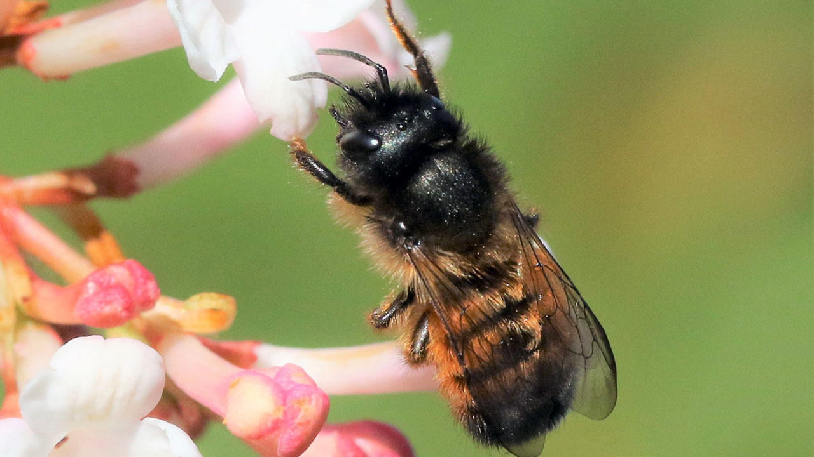
Rød murerbi
Rød murerbi (Osmia bicornis)
Udbredelse: Europa.
Meget effektiv bestøver af æble, kirsebær og pære.
Solitær; yngler i hulrum og insekthoteller.
Dyr der ligner bier – billeder og fakta ▶
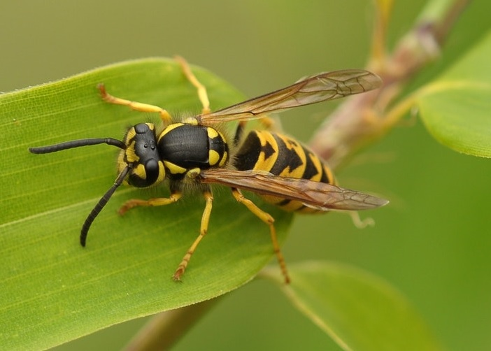
Hveps
Hveps (Vespula sp.)
Slank krop og tydelig smal talje.
Glattere og mindre behåret end bier.
Kan stikke flere gange; jager også andre insekter.
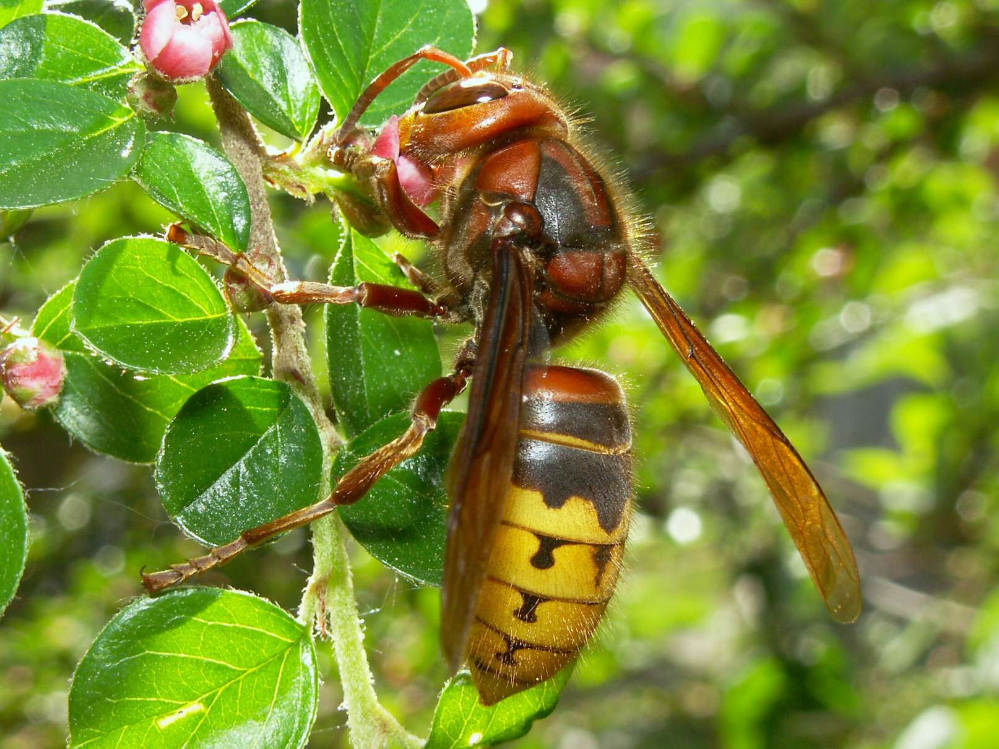
Gedehams
Gedehams (Vespa crabro)
Større end hvepse; rødbrune og gule tegninger.
Bygger store papirtavler i hulrum.
Vigtige rovdyr på skadedyr; stikker sjældent uprovokeret.
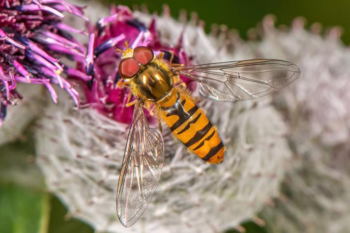
Svirreflue
Svirreflue (Syrphidae)
Ligner bier/hvepse men er fluer: kun ét par vinger.
Kan stå stille i luften og svirre fra blomst til blomst.
Uskadelig – stikker ikke.
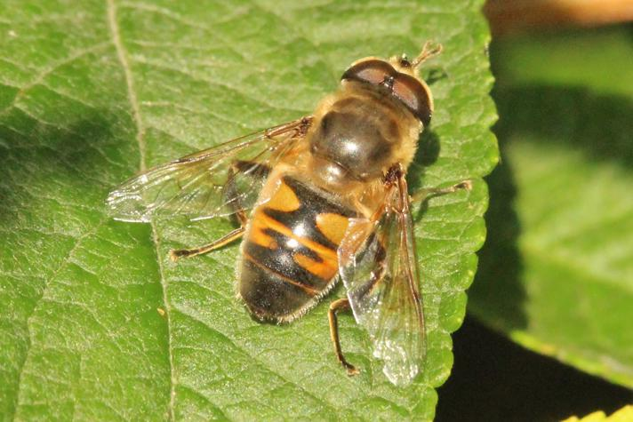
Droneflue
Droneflue (Eristalis tenax)
Efterligner honningbiernes farver og form.
Fluekendetegn: store øjne og korte antenner.
Vigtig bestøver, men uden brod.
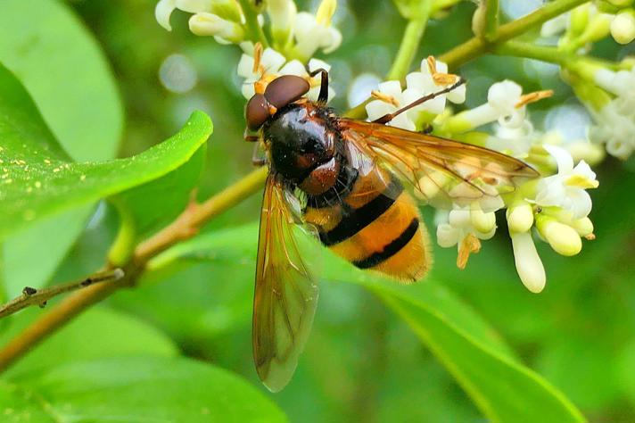
Humle-svirreflue
Humle-svirreflue (Volucella bombylans)
Imiterer humlebiernes pels og farvetegninger.
Flyver langsomt og roligt – uden brod.
Larver kan leve i humlebo.
Papirhveps
Papirhveps (Polistes sp.)
Meget slank med lange ben; hænger ofte benene under flyvning.
Bygger åbne papir-reder under udhæng.
Kan være territoriale nær reden.
Vigtige planter for bier – billeder og fakta ▶
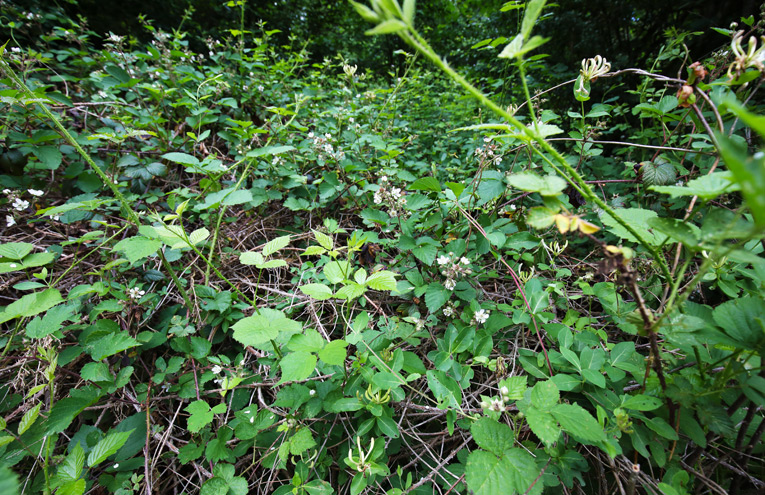
Brombær
Brombær (Rubus fruticosus)
Fakt: Brombær blomstrer fra maj til august og tilbyder rigeligt nektar – et populært valg for bier.
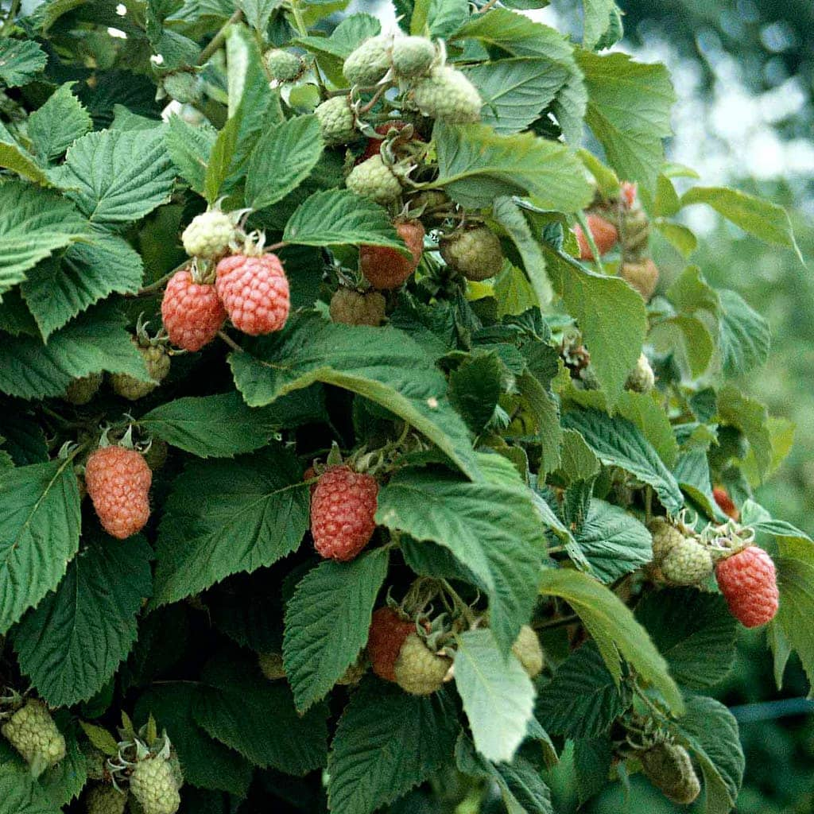
Hindbær
Hindbær (Rubus idaeus)
Fakt: Vigtig fødekilde for bier; blomstrer fra juni til juli.
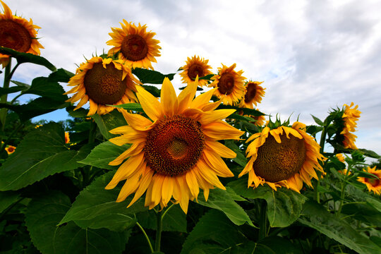
Solsikke
Solsikke (Helianthus annuus)
Fakt: Meget pollen og nektar fra juli til september.
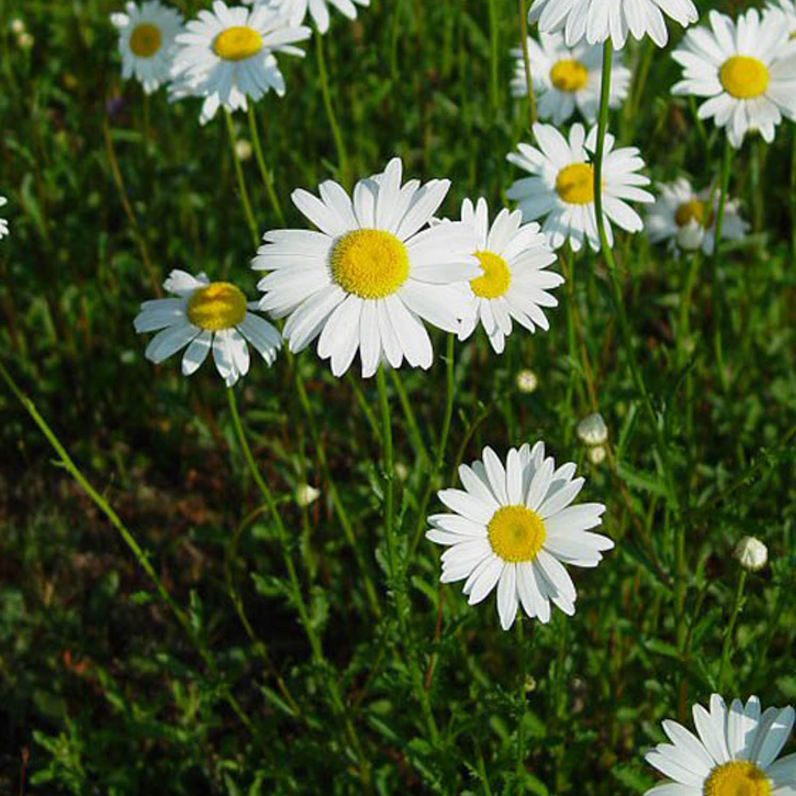
Marguerit
Marguerit (Leucanthemum vulgare)
Fakt: Blomstrer fra maj til oktober; fremragende fødekilde for mange biarter.
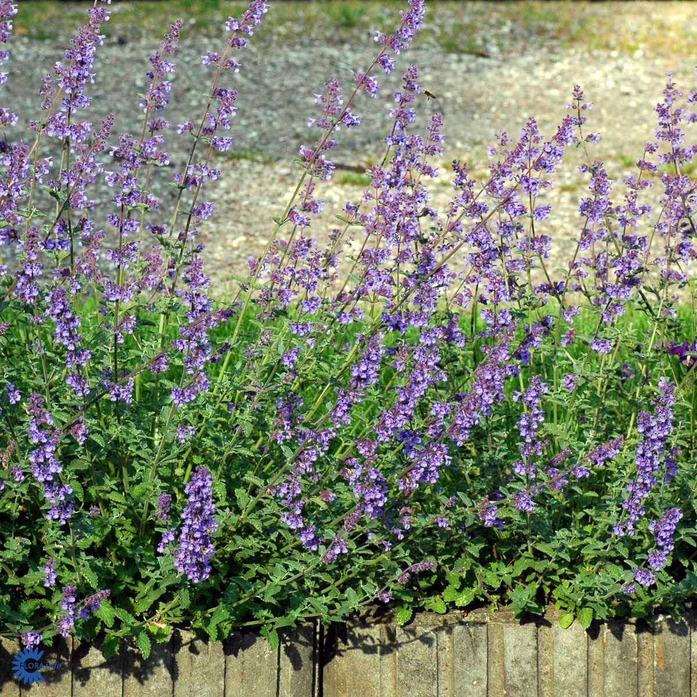
Katteurt
Katteurt (Nepeta cataria)
Fakt: Tiltrækker bier med stærk duft; blomstrer fra juni til september.
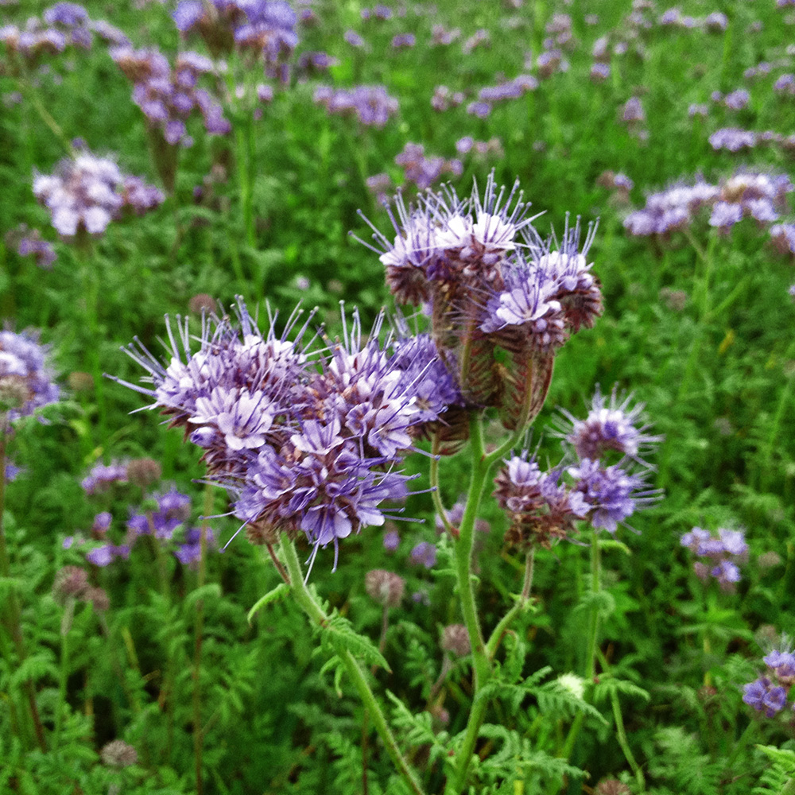
Phacelia
Phacelia (P. tanacetifolia)
Fakt: Fremragende bi-eng; blomstrer fra maj til september med særligt meget nektar.
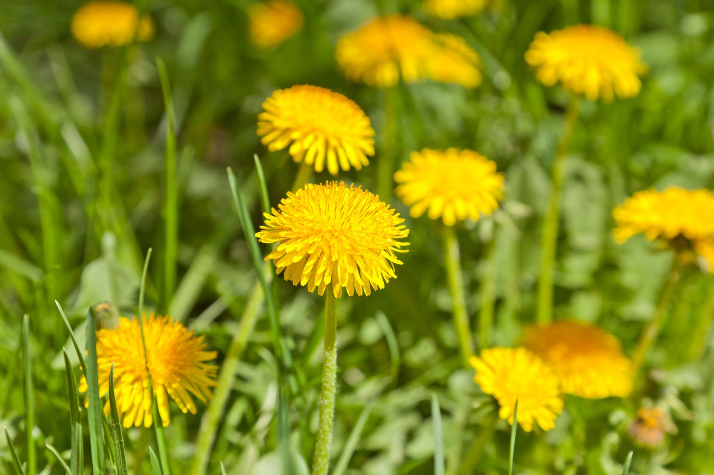
Løvetand
Løvetand (Taraxacum officinale)
Fakt: En af de første fødekilder om foråret; blomstrer fra marts til maj.
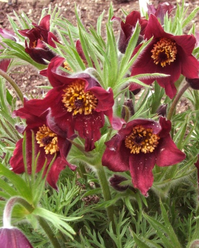
Klokke
Klokke (Campanula)
Fakt: Smukke blomster fra maj til august; vigtig fødekilde for bier.
Lavendel
Lavendel (Lavandula)
Fakt: Blomstrer fra juli til august; kendt for højt nektarindhold.
Dahlia
Dahlia (Dahlia)
Fakt: Blomstrer fra juli til oktober; giver farver og føde til bier.
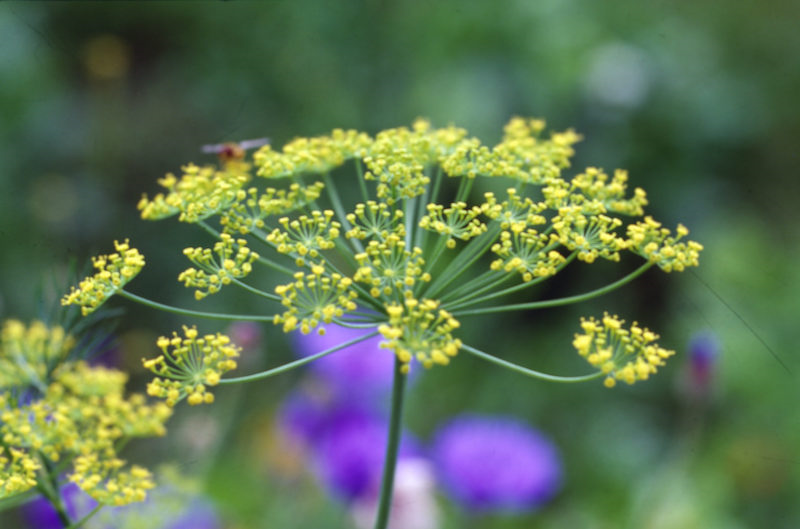
Skærmblomst
Skærmblomst (Apiaceae)
Fakt: Blomstrer fra juni til september; vigtig for bier og andre bestøvere.
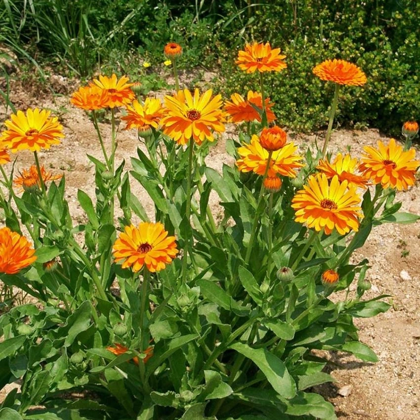
Ringblomst
Ringblomst (Calendula officinalis)
Fakt: Blomstrer fra maj til oktober; smuk og nærende for bier.
Vandlilje
Vandlilje (Nymphaea)
Fakt: Blomstrer fra juni til oktober; god fødekilde for bier.
Hvid fedtsten
Hvid fedtsten (Sedum album)
Fakt: Blomstrer fra august til oktober; sen og vigtig fødekilde.
Karpaterklokke
Karpaterklokke (Campanula carpatica)
Fakt: Blomstrer fra maj til august; vigtig fødekilde for bier.